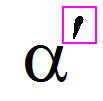
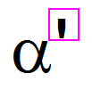
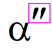
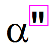

Letztes Update: 01.07.2022
Manchmal möchten Sie vielleicht eine Prime oder Double Prime zu Ihrer Textbeschriftung hinzufügen. Beispielhaft wird das Prime-Symbol verwendet, um dies zu tun:
Alternativ:
| Symbol | Beispielvorschau | Tastaturzugriff (PC US Englische Tastatur) |
Escape-Sequenz |
|---|---|---|---|
| Prime |  |
Strg + ' oder Strg + P (Wenn Hochgestellt aktiviert ist) |
\+(\y(')) |
| Einfache Anführungszeichen |  |
' |
\' |
| Double Prime |  |
Strg + Shift + ' oder Strg + Shift + P (Wenn Hochgestellt aktiviert ist) |
\+(\y(")) |
| Doppelte Anführungszeichen |  |
Shift + ' |
\" |
|
Der Versatz von der Prime (oder Double Prime) zur Basis wird von der Systemvariable @TAPP gesteuert, um die Höhenänderung @TAPP (Standard 130) auf einen Wert zwischen -1000 und 1000 anzupassen und eine Aktualisierung durchzuführen, die den Effekt anzeigt. |
Schlüsselwörter:Prime, Double Prime, Versatz, einfache Anführungszeichen, Prime in voller Höhe, doppelte Anführungszeichen, Escape-Sequenz, Tastatur
Origin-Version mind. erforderlich: 2015 SR0